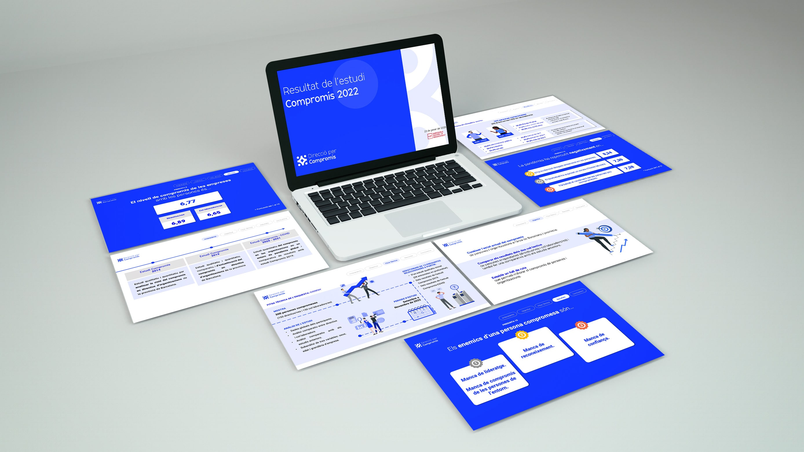

2023
L'Associació de Direcció por Compromís focuses on shared commitment as a cornerstone of business excellence: “people who are capable and worthy of trust within credible organizations that are able to generate that trust.”
Branding, Corporative assets
L'Associació de Direcció por Compromís trabaja el compromiso compartido como un pilar de la excelencia empresarial: “personas capaces y dignas de merecer confianza, en organizaciones creíbles y capaces de generar esa confianza”.
DxC wanted to convey the idea of a group of people and the unity between them. It was important that the design reflected a serious and professional tone, suitable for corporate use, while also maintaining a modern touch that adds freshness and relevance to the organization’s image.
DxC buscaba transmitir la idea de un grupo de personas y la unión entre ellas. Era importante que el diseño reflejara un tono serio y profesional, acorde con su uso en el ámbito empresarial, pero sin perder un toque moderno que aportara frescura y actualidad a la imagen de la organización.
